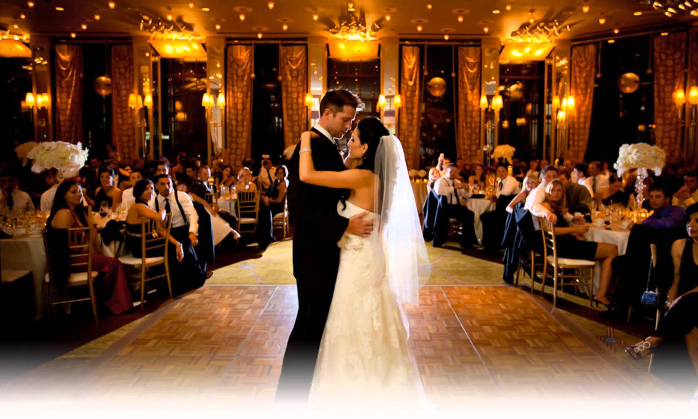

Первый свадебный танец молодоженов - это одно из главных, ярких событий всего торжества. Свадьба без свадебного танца молодоженов, - это большой пробел на Вашем празднике. Это сравнимо с отсутствием традиционного задувания свечей на праздничном торте в день рождения, это как встреча Нового года без поздравительной речи президента,- все это серьезнее, чем Вам кажется...

Свадебный танец - это добрая традиция, без соблюдения которой, мы теряем смысл нашего праздника! Через танец возлюбленные передают те чувства и эмоции, которые нельзя передать просто словами. Изысканные фигуры Свадебного Вальса, страсть и грация Танго, зажигательный, Необычный и веселый танец, даже Свадебный флешмоб и это еще не всё, что сегодня танцуют на Свадьбах. По Вашему желанию воплотится в жизнь "эксклюзивная", или как говорят, «Прикольная» постановка свадебного танца, учитывая Ваши музыкальные предпочтения.
Постановка первого танца молодоженов должна запомниться только приятными моментами и, безусловно, волнующим, нежным, романтичным событием!!!